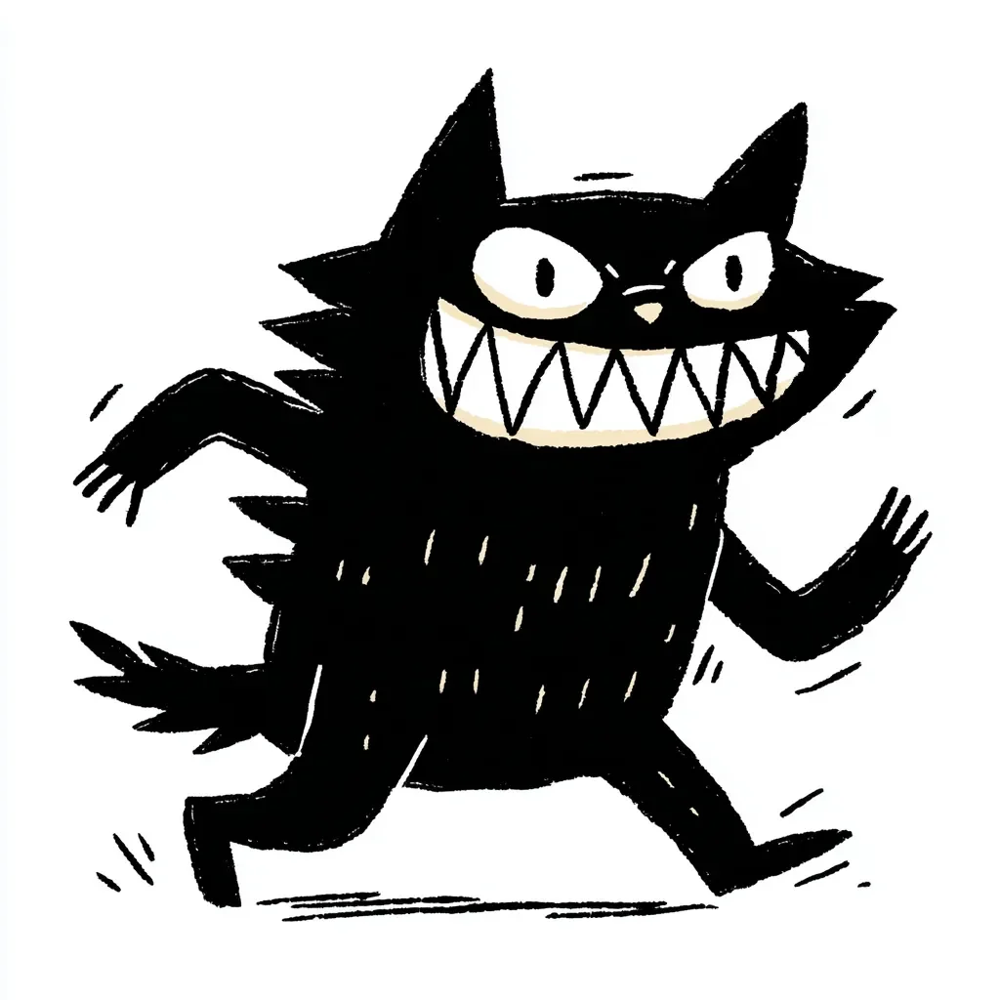

도자기 램프가 석고 벽에 부딪혀 산산조각이 났고, 검은 형체는 간발의 차로 그것을 피했다.
[The porcelain lamp shattered against the plaster, missing the black blur by a fraction of an inch.]
“죽어라, 이 작은 악마 녀석.” 남자가 이를 갈듯이 으르렁거렸다. 아드레날린이 솟구쳐 피가 마치 독한 배터리 산처럼 끓어올랐다.
[”Die, you little devil,” the man hissed, adrenaline turning his blood into battery acid.]
그 존재는 두꺼운 벨벳 커튼을 타고 기어 올라갔다. 날카로운 발톱을 미친 듯이 박아대며 중력을 거스르는 필사적인 몸짓이었다. 쥐가 아니었다. 쥐에게는 척추를 따라 펑크 록 스타일의 톱날처럼 뻣뻣하고 들쭉날쭉한 가시가 돋아나 있지 않다. 쥐에게는 머리통을 두 쪽으로 갈라놓은 듯한 입도 없다.
[The thing scrambled up the heavy velvet drapes, defying gravity with frantic, clawed desperation. It wasn’t a rat. Rats didn’t have stiff, jagged spikes running down their spines like a punk-rock buzzsaw. Rats didn’t have mouths that seemed to split their entire head in two.]
녀석은 커튼 봉 근처에서 멈춰 서서 아래를 내려다보았다. 녀석이 씨익 웃었다.
[It paused near the curtain rod and looked down. It grinned.]
그게 최악이었다. 그 웃음 말이다. 마치 숯덩이 속에 톱니 모양의 하얀 초승달이 떠 있는 것 같았다. 희생자를 조롱하는 법을 터득한 곰 덫처럼 보였다.
[That was the worst part. The grin. It was a white, serrated crescent moon floating in a ball of soot. It looked like a bear trap that had learned to mock its victims.]
남자는 손에 잡히는 대로 가장 무거운 물건, 건조대에 있던 무쇠 프라이팬을 집어 들고 몸을 날렸다. 괴물은 질척한 소리를 내며 바닥으로 떨어지더니, 미친 듯이 뜨개질 바늘을 부딪히는 소리를 내며 장판 위를 내달렸다. 빨랐다. 말도 안 되게 빨랐다.
[The man grabbed the nearest heavy object—a cast-iron skillet from the drying rack—and lunged. The creature dropped to the floor with a wet thump, skittering across the linoleum with the sound of frantic knitting needles. It was fast. Impossibly fast.]
그는 복도까지 녀석을 쫓았다. 그는 거칠게 숨을 몰아쉬었고, 흐르는 땀 때문에 눈이 따가웠다. 괴물은 걸레받이를 튕기듯 지그재그로 움직였는데, 마치 혼돈의 그림자가 실체를 입은 듯했다. 녀석은 공격하는 게 아니었다. 그를 가지고 노는 것이었다. 분명 악마였다. 지하실 바닥의 갈라진 틈새에서 소환된 무언가였다.
[He chased it into the hallway. He was panting, sweat stinging his eyes. The creature zigzagged, bouncing off the baseboards, a chaotic shadow manifesting physical form. It wasn’t attacking; it was toying with him. It was a demon, surely. Something summoned from a cracks in the basement foundation.]
녀석은 손님용 침실로 잽싸게 뛰어들었다. 막다른 길이었다.
[It darted into the guest bedroom. A dead end.]
남자는 등 뒤로 문을 발로 차 닫아버려, 둘을 방 안에 가뒀다. 무겁고 숨 막히는 침묵이 내려앉았다. 그는 손가락 마디가 하얗게 질리도록 양손으로 프라이팬을 꽉 움켜쥐었다.
[The man kicked the door shut behind him, sealing them both in. Silence fell, heavy and suffocating. He gripped the skillet with both hands, his knuckles white.]
“이제 도망칠 곳은 없어.” 그가 속삭였다.
[”Nowhere to run,” he whispered.]
괴물은 화장대 쪽으로 몰렸다. 녀석은 등을 둥글게 말고 가시를 바짝 세웠는데, 그 모습에 몸집이 두 배는 커 보였다. 녀석은 그 말도 안 되는 이빨 투성이 입을 벌리고 소리를 내질렀다. 으르렁거리는 소리가 아니라, 귀를 찢을 듯 높고 떨리는 비명이었다.
[The creature was backed against the vanity. It arched its back, the spikes bristling, making it look twice its size. It opened that impossible, toothy maw and let out a sound—not a roar, but a high-pitched, vibrating screech.]
그는 이 악몽 같은 녀석을 납작하게 뭉개버릴 작정으로 무쇠 팬을 치켜들었다.
[He raised the iron pan, ready to crush the nightmare flat.]
침실 문 손잡이가 달그락거렸다. 그러더니 문이 활짝 열렸다.
[The bedroom door handle jiggled. Then, it swung open.]
“아서?” 명랑하고 천진난만한 목소리가 불렀다. “나 왔어! 내가 브리더한테서 뭘 받아왔는지 당신 절대 모를걸.”
[”Arthur?” a voice called out, cheerful and oblivious. “I’m home! You’ll never guess what I picked up from the breeder.”]
아서는 프라이팬을 허공에 든 채 얼어붙었다. 아내가 열쇠를 내려놓으며 안으로 들어왔다. 그녀는 땀을 뻘뻘 흘리며 조리 도구로 무장한 남편을 한 번, 구석에서 몸을 떨며 씨익 웃고 있는 흉물스러운 괴물을 한 번 바라보았다.
[Arthur froze, the skillet hovering in mid-air. His wife stepped in, dropping her keys. She looked at the man, sweating and armed with cookware, and then at the shivering, grinning monstrosity in the corner.]
“어머, 얘를 찾았구나!” 그녀가 손뼉을 치며 환호성을 질렀다.
[”Oh, you found him!” she squealed, clapping her hands.]
그녀는 아서를 그대로 지나쳐 그 악몽 덩어리를 품에 안아 올렸다. 괴물은 즉시 몸에 힘을 빼고 축 늘어지더니, 울퉁불퉁한 얼굴을 그녀의 목에 비비며 고장 난 전기톱 같은 소리로 골골거렸다.
[She walked right past Arthur and scooped the nightmare up into her arms. The creature instantly went limp, nuzzling its jagged face into her neck and purring like a broken chainsaw.]
“아서, 팬 좀 내려놔.” 녀석의 가시 돋친 귀 사이를 긁어주며 그녀가 부드럽게 타일렀다. “미스터 기글스가 겁먹잖아. 브리더 말이 이 페루산 브리슬 캣 종은 불안감에 아주 예민하대.”
[”Arthur, put the pan down,” she scolded gently, scratching the beast between its spiked ears. “You’re scaring Mr. Giggles. The breeder said this species of Peruvian Bristle-Cat is very sensitive to anxiety.”]
아서는 프라이팬을 천천히 내렸다. 괴물은 그녀의 어깨 너머로 그를 쳐다보며 마지막으로 이빨을 드러내 보였다.
[Arthur lowered the skillet. The creature looked over her shoulder and flashed its teeth one last time.]